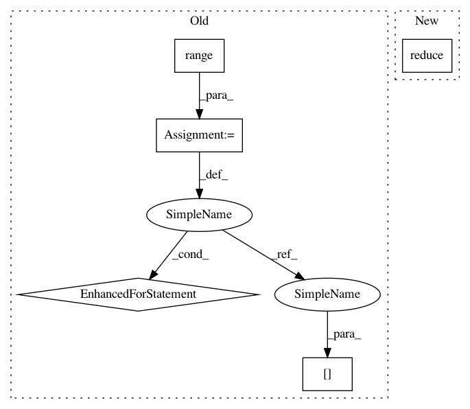

95a3314789b0b19f68b803804e2c55be067ff884,qiskit/aqua/operators/common.py,,measure_pauli_z,#Any#Any#,43
Before Change
tot = sum(data.values())
for key in data:
value = 1
for j in range(pauli.numberofqubits):
if ((pauli.x[j] or pauli.z[j]) and
key[pauli.numberofqubits - j - 1] == "1"):
value = -value
// print(key, data[key])
observable = observable + value * data[key] / tot
return observable
// observable = 0.0
After Change
for key, value in data.items():
bitstr = np.asarray(list(key))[::-1].astype(np.bool)
// pylint: disable=no-member
sign = -1.0 if np.logical_xor.reduce(np.logical_and(bitstr, p_z_or_x)) else 1.0
observable += sign * value
observable /= num_shots
return observable
In pattern: SUPERPATTERN
Frequency: 3
Non-data size: 5
Instances
Project Name: Qiskit/qiskit-aqua
Commit Name: 95a3314789b0b19f68b803804e2c55be067ff884
Time: 2019-07-22
Author: chenrich@us.ibm.com
File Name: qiskit/aqua/operators/common.py
Class Name:
Method Name: measure_pauli_z
Project Name: MycroftAI/padatious
Commit Name: a1383be585a1798a3333139c4c1be149d3c5a454
Time: 2017-09-15
Author: matthew3311999@gmail.com
File Name: padatious/util.py
Class Name:
Method Name: resolve_conflicts
Project Name: Qiskit/qiskit-aqua
Commit Name: 95a3314789b0b19f68b803804e2c55be067ff884
Time: 2019-07-22
Author: chenrich@us.ibm.com
File Name: qiskit/aqua/operators/common.py
Class Name:
Method Name: measure_pauli_z
Project Name: OpenMined/PySyft
Commit Name: 59d4bbaaf06850e2dfb357855f50b05f6c9aadb1
Time: 2020-10-02
Author: skywind29@users.noreply.github.com
File Name: syft/frameworks/torch/fl/utils.py
Class Name:
Method Name: federated_avg